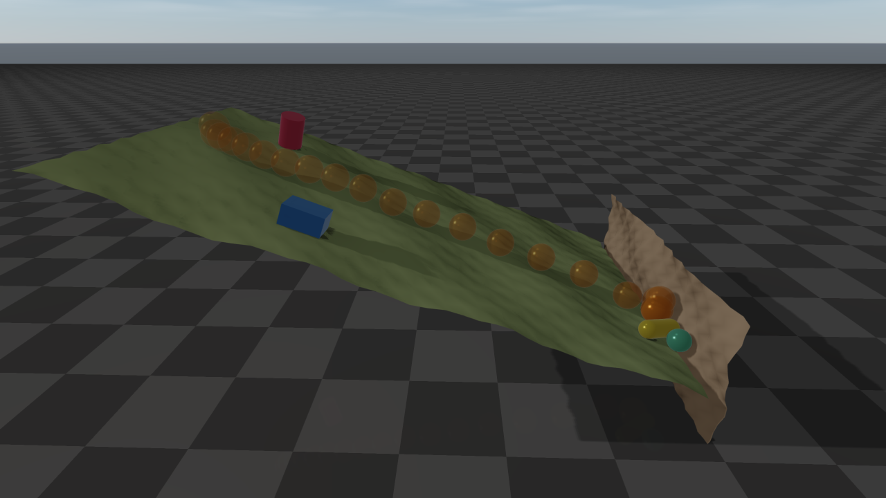

Height Map
A height map is a grid of points that are triangulated to form a surface.
Because the surface over any point is found directly from the grid, collision checking is very
efficient, and it is the recommended way to create terrain.
A height map is always a static object. Height samples are stored row by row:
the sample at grid index (x, y) is height[y * xSamples + x].
Position and orientation
The grid lives in the height map’s own frame. It is centered at (centerX, centerY) there,
the center given when the map is created or updated (getCenterX(), getCenterY()), and the
heights rise along the frame’s z axis. Like every other object, the height map is placed by the
pose of its frame: setPosition(x, y, z) moves the frame origin and setOrientation(...)
rotates the frame about that origin. With the position \(\boldsymbol{o}\) and the rotation
\(\boldsymbol{R}\), the point \(\boldsymbol{p}\) of the frame lies at
\(\boldsymbol{o} + \boldsymbol{R}\boldsymbol{p}\) in the world, whichever of the two is set
first. A new height map has the identity pose, so its grid is centered at (centerX, centerY)
in the world, and getComPosition() returns the world position of the grid center. A map
created around the frame origin (centerX = centerY = 0) therefore rotates about its own
center, while a map centered elsewhere swings around the origin, like a mesh whose vertices lie
away from its body frame origin.
// a 4 m x 4 m map centered at (10, 0), raised by 0.5 m: move the frame, not the center
auto* map = world.addHeightMap(41, 41, 4.0, 4.0, 10.0, 0.0, heights);
map->setPosition(0.0, 0.0, 0.5);
// the same placement built around the frame origin, so it can be tilted about its center
auto* tilted = world.addHeightMap(41, 41, 4.0, 4.0, 0.0, 0.0, heights);
tilted->setPosition(10.0, 0.0, 0.5);
tilted->setOrientation(Eigen::Matrix3d(Eigen::AngleAxisd(0.2, Eigen::Vector3d::UnitY())));
Any rotation is allowed: a tilted map is a slope, a map rotated 90 degrees about x is a wall,
and one rotated 180 degrees is a ceiling. A world XML file sets the orientation with the
quat attribute of the height map.


Two rotated height maps: a slope tilted 20 degrees and a wall at its foot. The box and the cylinder rest on the slope, held by friction, while the ball (its descent shown light to dark), the capsule and the small sphere roll and slide down and stop against the wall.
Everything that touches the surface follows the orientation: contacts with
every shape, ray tests and the sensors built on them, swept CCD, granular
particles, and rendering in rayrai and the TCP viewer. A scene on a rotated map
moves like the same scene on the unrotated map, with every body and gravity
rotated along with it; the two agree to rounding error. A height map is one-sided whatever its
orientation: everything below the surface, along the local -z axis, is inside
the terrain, and a body that ends up there is pushed back out through the
surface. The rotated_blocky_heightmap_drop example (see Examples) tilts a map by
15 degrees.
Querying the surface
You can query the surface at a world-frame (x, y) position:
height:
getHeight(x, y)(visual height) andgetContactHeight(x, y)(collision surface; the two differ only after a visual-only update)normal vector:
getNormal(x, y, normal)(collision surface, written to the output argument)color:
getColor(x, y)
These queries ignore the orientation by design: they read the height field as if only the
translation were applied, so (x, y) addresses the grid, centered at the position plus
(centerX, centerY), whether or not the map is rotated. To evaluate a rotated map, query its
unrotated coordinates and rotate the result about the origin \(\boldsymbol{o}\)
(getPosition()):
the surface point above
(x, y)of the unrotated map is \(\boldsymbol{o} + \boldsymbol{R}\,((x, y, h) - \boldsymbol{o})\) with \(h\) =getHeight(x, y), and its normal is \(\boldsymbol{R}\) times the result ofgetNormal(x, y, normal);a world point \(\boldsymbol{w}\) has the unrotated coordinates \(\boldsymbol{o} + \boldsymbol{R}^T(\boldsymbol{w} - \boldsymbol{o})\); it is above the surface if their z exceeds
getHeightat their x and y.
// the point 0.5 m above the rotated surface at the unrotated map's (x, y)
const Eigen::Vector3d o = heightMap->getPosition();
const Eigen::Matrix3d R = heightMap->getRotationMatrix();
raisim::Vec<3> normal;
heightMap->getNormal(x, y, normal);
const Eigen::Vector3d surface = o + R * (Eigen::Vector3d(x, y, heightMap->getHeight(x, y)) - o);
const Eigen::Vector3d above = surface + 0.5 * R * normal.e();
Runtime updates
update(...) changes the visual and collision height data; it cannot change
the number of samples. The supplied height vector must contain exactly
getXSamples() * getYSamples() finite entries; invalid input is ignored with
a warning and leaves the existing map unchanged.
For visualization-only streaming, updateVisualHeight(...) replaces the
full visual height array and updateVisualHeightPatch(...) updates an
inclusive rectangular sample range without rebuilding collision. Both require
the center and size arguments to match the current ones; the center, like that of update(...),
is in the height map frame (getCenterX(), getCenterY()). The patch method
receives the full row-major height array and copies only the requested range. Per-vertex colors use setColor(...); after a full color map has been
initialized, setColorPatch(...) updates a tightly packed rectangular color
range.
Example
API
HeightMap
-
class HeightMap : public raisim::SingleBodyObject
A static terrain defined by a regular grid of heights (create it with World::addHeightMap()). The grid lies in the heightmap’s own frame. It covers [centerX - xSize/2, centerX + xSize/2] x [centerY - ySize/2, centerY + ySize/2] there, and the heights are z coordinates in that frame; sample (x, y) is stored at index y * xSamples + x, with index 0 at the minimum x and y. Height samples may be NaN or infinity and are stored without filtering. Heights are interpolated over two triangles per cell.
Like every other object, the heightmap is placed by the pose of its frame: setPosition() moves the frame origin and setOrientation() rotates the frame about that origin, so a point p of the frame lies at position + R p in the world. A new heightmap has the identity pose, so its grid is centered at (centerX, centerY) in the world. Collision (including granular media and swept CCD), ray tests and rendering follow the full pose.
The point queries getHeight(), getContactHeight(), getNormal() and getColor() ignore the orientation by design: they read the height field as if only the translation were applied, so a world-frame (x, y) addresses the grid directly. To evaluate a rotated map, query its unrotated coordinates and rotate the result about the position t: the surface point above (x, y) of the unrotated map is t + R ((x, y, getHeight(x, y)) - t), and its normal is R getNormal(x, y). For a world point w, the unrotated coordinates are t + R^T (w - t).
Public Functions
-
HeightMap(double centerX, double centerY, const std::string &raisimHeightMapFileName)
load a heightmap from a raisim text file: “xSamples ySamples xSize ySize” followed by xSamples*ySamples heights.
- Parameters:
centerX – [in] x coordinate of the grid center in the heightmap frame (m)
centerY – [in] y coordinate of the grid center in the heightmap frame (m)
raisimHeightMapFileName – [in] path to the text file
-
HeightMap(double centerX, double centerY, const std::string &pngFileName, double xSize, double ySize, double heightScale, double heightOffset)
load a heightmap from a grayscale PNG (8 or 16 bit). Each height is pixelValue * heightScale + heightOffset.
- Parameters:
centerX – [in] x coordinate of the grid center in the heightmap frame (m)
centerY – [in] y coordinate of the grid center in the heightmap frame (m)
pngFileName – [in] path to the PNG file (must have the .png extension)
xSize – [in] size in x (m)
ySize – [in] size in y (m)
heightScale – [in] scale applied to the raw pixel value
heightOffset – [in] offset added after scaling (m)
-
HeightMap(size_t xSamples, size_t ysamples, double xSize, double ySize, double centerX, double centerY, const std::vector<double> &height)
create a heightmap from height samples.
- Parameters:
xSamples – [in] number of samples in x (at least 2)
ysamples – [in] number of samples in y (at least 2)
xSize – [in] size in x (m)
ySize – [in] size in y (m)
centerX – [in] x coordinate of the grid center in the heightmap frame (m)
centerY – [in] y coordinate of the grid center in the heightmap frame (m)
height – [in] xSamples*ySamples heights, indexed y * xSamples + x (m). NaN and infinity are copied unchanged.
-
inline HeightMap(size_t xSamples, int ysamples, double xSize, double ySize, double centerX, double centerY, const Eigen::VectorXd &heightIn)
Same as the std::vector overload, with the heights in an Eigen vector.
- Parameters:
xSamples – [in] number of samples in x (at least 2)
ysamples – [in] number of samples in y (at least 2)
xSize – [in] size in x (m)
ySize – [in] size in y (m)
centerX – [in] x coordinate of the grid center in the heightmap frame (m)
centerY – [in] y coordinate of the grid center in the heightmap frame (m)
heightIn – [in] xSamples*ySamples heights, indexed y * xSamples + x (m). NaN and infinity are copied unchanged.
-
inline HeightMap(double xSize, double ySize, double centerX, double centerY, const Eigen::MatrixXd &heightIn)
create a heightmap from a matrix of heights. Matrix rows are x samples and columns are y samples.
- Parameters:
xSize – [in] size in x (m)
ySize – [in] size in y (m)
centerX – [in] x coordinate of the grid center in the heightmap frame (m)
centerY – [in] y coordinate of the grid center in the heightmap frame (m)
heightIn – [in] heights; heightIn(i, j) is the sample at x index i and y index j (m). NaN and infinity are copied unchanged.
-
HeightMap(double centerX, double centerY, const TerrainProperties &terrainProperties)
generate a fractal (Perlin) terrain.
- Parameters:
centerX – [in] x coordinate of the grid center in the heightmap frame (m)
centerY – [in] y coordinate of the grid center in the heightmap frame (m)
terrainProperties – [in] terrain generation parameters (sample counts, size, …)
-
void update(double centerX, double centerY, const TerrainProperties &terrainProperties)
Update the existing heightmap with a new terrain properties. The size should be the same. You cannot change the topology. If you want to create a new topology, delete an old one and make a new heightmap. Invalid input is ignored with a warning (the previous state is kept).
- Parameters:
centerX – [in] x coordinate of the grid center in the heightmap frame (m)
centerY – [in] y coordinate of the grid center in the heightmap frame (m)
terrainProperties – [in] new terrain properties. You cannot change the sample size
-
void update(double centerX, double centerY, double sizeX, double sizeY, const std::vector<double> &height)
Update the existing heightmap and rebuild its collision surface. The sample count is fixed; recreate the heightmap to change its topology. Height samples may be NaN or infinity and are copied without filtering. Invalid sample count or geometry leaves the previous state unchanged.
- Parameters:
centerX – [in] x coordinate of the grid center in the heightmap frame (m)
centerY – [in] y coordinate of the grid center in the heightmap frame (m)
sizeX – [in] height map size in the x direction
sizeY – [in] height map size in the y direction
height – [in] height samples, height[y * xSamples + x]; must have exactly xSamples*ySamples values. NaN and infinity samples are copied unchanged.
-
void updateVisualHeight(double centerX, double centerY, double sizeX, double sizeY, const std::vector<double> &height)
Update height samples for visualization/server synchronization without rebuilding the contact heightmap used by physics. Call update(…) when collision must be synchronized immediately. Height samples may be NaN or infinity; they are copied without filtering. The center and size must equal the current ones (otherwise the call is ignored with a warning).
- Parameters:
centerX – [in] current grid center x in the heightmap frame (m)
centerY – [in] current grid center y in the heightmap frame (m)
sizeX – [in] current size in x (m)
sizeY – [in] current size in y (m)
height – [in] new height samples, height[y * xSamples + x]; NaN and infinity are copied unchanged
-
bool updateVisualHeightPatch(double centerX, double centerY, double sizeX, double sizeY, const std::vector<double> &height, double heightOffset, size_t minX, size_t maxX, size_t minY, size_t maxY)
Update a rectangular sample patch for visualization without copying/rebuilding the whole heightmap or its contact data. Sample bounds are inclusive and clamped to the grid. Patch samples and resulting values may be NaN or infinity; they are stored without filtering.
- Parameters:
centerX – [in] current center x (must match exactly)
centerY – [in] current center y (must match exactly)
sizeX – [in] current size in x (must match exactly)
sizeY – [in] current size in y (must match exactly)
height – [in] full-size height vector (at least xSamples*ySamples, indexed y * xSamples + x); only the patch is read
heightOffset – [in] offset added to every copied sample; non-finite results are retained
minX – [in] first x sample index
maxX – [in] last x sample index
minY – [in] first y sample index
maxY – [in] last y sample index
- Returns:
false (and no change) if the geometry does not match or the patch is empty
-
void init(size_t xSamples, size_t ysamples, double xSize, double ySize, double centerX, double centerY)
Internal: validates the geometry and builds the collision heightmap from the stored heights.
- Parameters:
xSamples – [in] number of samples in x
ysamples – [in] number of samples in y
xSize – [in] size in x (m)
ySize – [in] size in y (m)
centerX – [in] center x (m)
centerY – [in] center y (m)
-
const std::vector<double> &getHeightMap() const
PHY-012: read-only access. Editing heights in place bypassed extrema/AABB/collision rebuild and dirty-flagging, yielding stale contacts and out-of-bounds sampling. Use update(…), updateVisualHeight(…), or the patch APIs to modify heights safely.
- Returns:
the (visual) height samples, indexed y * xSamples + x. Same as getHeightVector().
-
double getHeight(double x, double y) const
Get visual height at a given coordinate. After a visual-only update this can intentionally differ from the collision surface. Points outside the map use the nearest edge samples. The orientation is ignored by design: the result is the height of the unrotated heightmap at its current position (see the class description for evaluating a rotated map).
- Parameters:
x – [in] x position in the world frame (m)
y – [in] y position in the world frame (m)
- Returns:
height in the world frame (m)
-
double getContactHeight(double x, double y) const
Get the collision-surface height at a given coordinate (same interpolation as getHeight()). Like getHeight(), this ignores the orientation by design.
- Parameters:
x – [in] x position in the world frame (m)
y – [in] y position in the world frame (m)
- Returns:
height in the world frame (m)
-
void getNormal(double x, double y, Vec<3> &normal) const
Get the collision-surface normal at a given coordinate. Like getHeight(), this ignores the orientation by design: the normal is that of the unrotated heightmap (rotate it by the orientation for the world-frame normal of a rotated map).
- Parameters:
x – [in] x position in the world frame (m)
y – [in] y position in the world frame (m)
normal – [out] unit normal of the triangle under (x, y), pointing up (+z side)
-
virtual void destroyCollisionBodies() final
Internal: releases collision bodies before removal.
-
inline size_t getXSamples() const
Get the number of points in x direction
- Returns:
the number of points
-
inline size_t getYSamples() const
Get the number of points in y direction
- Returns:
the number of points
-
inline double getXSize() const
Get the size of the heightmap in x direction
- Returns:
the length (m)
-
inline double getYSize() const
Get the size of the heightmap in y direction
- Returns:
the width (m)
-
inline double getCenterX() const
Get the x coordinate of the grid center in the heightmap frame, as given to the constructor or update(). It is the world x of the center only while the heightmap has the identity pose; the world position of the center is getComPosition().
- Returns:
center x in the heightmap frame (m)
-
inline double getCenterY() const
Get the y coordinate of the grid center in the heightmap frame (see getCenterX()).
- Returns:
center y in the heightmap frame (m)
-
inline const std::vector<double> &getHeightVector() const
Get the vector of (visual) height values
- Returns:
vector containing height values, indexed y * xSamples + x
-
const std::vector<double> &getContactHeightVector() const
- Returns:
the height samples of the collision surface (differs from getHeightVector() after a visual-only update).
-
inline void setUpdatedFalse()
Internal: clears the update flags after the server has sent the geometry.
-
inline bool isUpdated() const
Get if the height or color is updated (used by the server to resend the geometry)
- Returns:
if the height is updated or not
-
inline bool hasVisualHeightUpdate() const
- Returns:
true if the heights changed since the last setUpdatedFalse().
-
inline bool getVisualDirtyRegion(size_t &minX, size_t &maxX, size_t &minY, size_t &maxY) const
Get the sample region changed by visual patch updates since the last setUpdatedFalse().
- Parameters:
minX – [out] first dirty x sample
maxX – [out] last dirty x sample
minY – [out] first dirty y sample
maxY – [out] last dirty y sample
- Returns:
false if no region is tracked (nothing changed, or the whole map is dirty)
-
virtual void updateCollision() final
Internal: synchronizes the collision geometry with the current pose.
-
virtual void updateContactAabbs() override
Internal: recomputes the world-frame AABBs used by the broadphase.
-
inline virtual void setPosition(const Eigen::Ref<const Eigen::Vector3d, Eigen::Unaligned> &originPosition) final
Move the heightmap frame origin. The grid moves with it, keeping its center (centerX, centerY) in the heightmap frame; z raises all heights.
- Parameters:
originPosition – [in] position of the heightmap frame origin in the world frame (m)
-
inline virtual void setPosition(double x, double y, double z) final
Move the heightmap frame origin (see the Eigen overload).
- Parameters:
x – [in] origin x (m)
y – [in] origin y (m)
z – [in] origin z (m)
-
inline virtual void setOrientation(const Eigen::Quaterniond &quaternion) final
Set the orientation; the heightmap rotates about its frame origin (getPosition()), like every other object, so a grid centered away from the origin swings around it.
- Parameters:
quaternion – [in] orientation
-
inline virtual void setOrientation(const Eigen::Vector4d &quaternion) final
Set the orientation; the heightmap rotates about its frame origin.
- Parameters:
quaternion – [in] orientation (w, x, y, z)
-
inline virtual void setOrientation(const Vec<4> &quaternion) final
Set the orientation; the heightmap rotates about its frame origin.
- Parameters:
quaternion – [in] orientation (w, x, y, z)
-
inline virtual void setOrientation(double w, double x, double y, double z) final
Set the orientation; the heightmap rotates about its frame origin.
- Parameters:
w – [in] quaternion w
x – [in] quaternion x
y – [in] quaternion y
z – [in] quaternion z
-
inline virtual void setOrientation(const Eigen::Matrix3d &rotationMatrix) final
Set the orientation; the heightmap rotates about its frame origin.
- Parameters:
rotationMatrix – [in] orientation (heightmap frame to world)
-
inline void setColor(const std::vector<ColorRGB> &colorLevel)
Set varying color on the heightmap If set, the appearance will be ignored. Set empty vector to the color level to make the appearance active
- Parameters:
colorLevel – [in] per-vertex color values (same size as the height vector, or empty)
-
inline bool setColorPatch(const std::vector<ColorRGB> &colorPatch, size_t minX, size_t maxX, size_t minY, size_t maxY)
Overwrite a rectangular region of the per-vertex color map (see setColor()). Bounds are inclusive and clamped.
- Parameters:
colorPatch – [in] (maxX-minX+1)*(maxY-minY+1) colors, x fastest
minX – [in] first x sample index
maxX – [in] last x sample index
minY – [in] first y sample index
maxY – [in] last y sample index
- Returns:
false if no full color map is set or the patch size does not match
-
inline const std::vector<ColorRGB> &getColorMap() const
Get the whole color vector. If set, the appearance will be ignored in unreal. Unity color map is not supported yet
- Returns:
color
-
inline ColorRGB getColor(double x, double y) const
Returns color of the heightmap at specified point. The color from an RGB camera can be different from this because this is the base color and lighting changes the appearance. Like getHeight(), this ignores the orientation by design.
- Parameters:
x – [in] x position in world coordinates
y – [in] y position in world coordinates
- Returns:
the RGB color
-
HeightMap(double centerX, double centerY, const std::string &raisimHeightMapFileName)
Terrain properties
-
struct TerrainProperties
Parameters of a fractal Perlin-noise terrain (see TerrainGenerator and World::addHeightMap()).
Public Functions
-
inline TerrainProperties(double frequency, double xSize, double ySize, double zScale, size_t xSamples, size_t ySamples, size_t fractalOctaves, double fractalLacunarity, double fractalGain, double stepSize, double heightOffset, std::uint32_t seed)
Sets every field; see the field descriptions.
- Parameters:
frequency – [in] noise frequency
xSize – [in] terrain size in x (m)
ySize – [in] terrain size in y (m)
zScale – [in] height scale (m)
xSamples – [in] number of samples in x
ySamples – [in] number of samples in y
fractalOctaves – [in] number of octaves
fractalLacunarity – [in] frequency multiplier per octave
fractalGain – [in] amplitude multiplier per octave
stepSize – [in] quantization step (m); 0 disables
heightOffset – [in] height offset (m)
seed – [in] noise seed
Public Members
-
double frequency
Base noise frequency (noise lattice cycles per meter).
-
double xSize
Terrain size in x direction (meters).
-
double ySize
Terrain size in y direction (meters).
-
double zScale
Height scale multiplier (m). The normalized noise, roughly in [0, 1], is multiplied by it.
-
double fractalLacunarity
Fractal lacunarity (frequency multiplier).
-
double fractalGain
Fractal gain (amplitude multiplier).
-
double stepSize
Quantization step size for stair-like terrain (m; 0 disables). Heights are floored to multiples of it.
-
double heightOffset
Constant height offset added to all samples (m), after quantization.
-
size_t fractalOctaves
Number of fractal octaves, in [1, 64].
-
size_t xSamples
Number of samples in x direction.
-
size_t ySamples
Number of samples in y direction.
-
std::uint32_t seed
Seed for the noise generator.
-
inline TerrainProperties(double frequency, double xSize, double ySize, double zScale, size_t xSamples, size_t ySamples, size_t fractalOctaves, double fractalLacunarity, double fractalGain, double stepSize, double heightOffset, std::uint32_t seed)